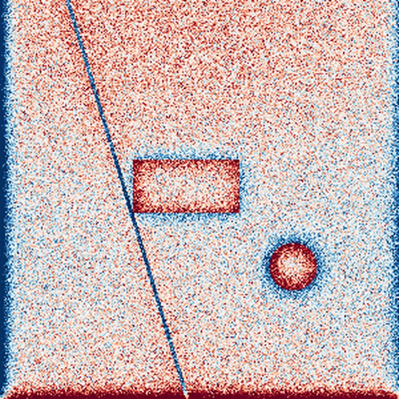
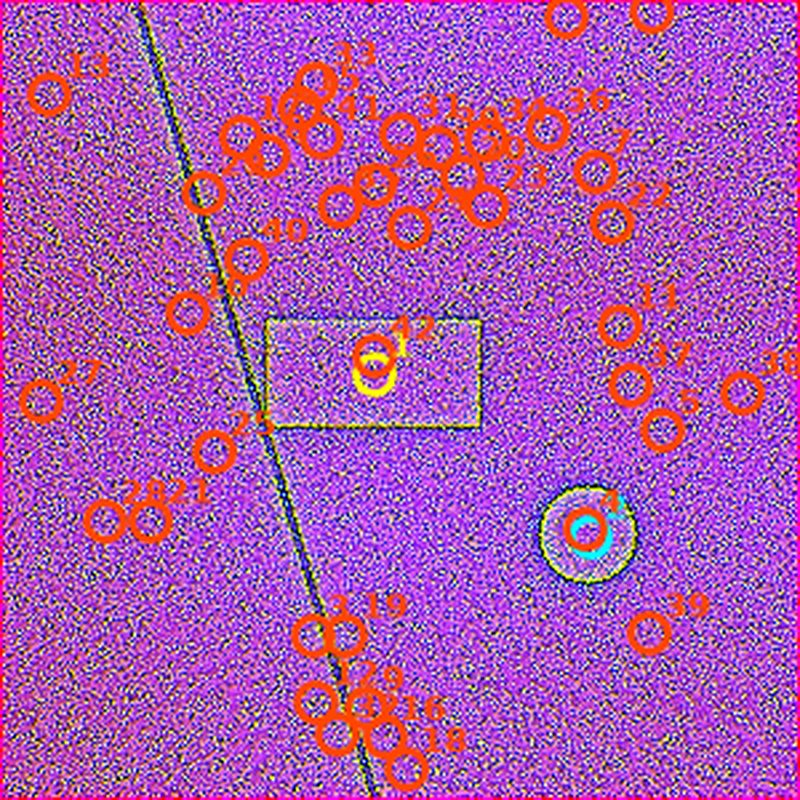
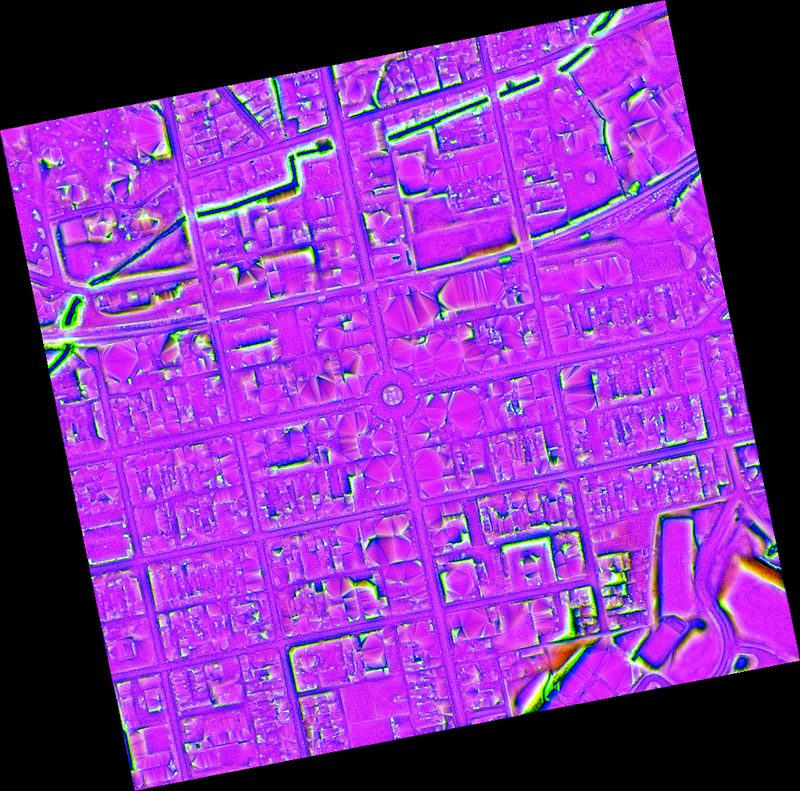
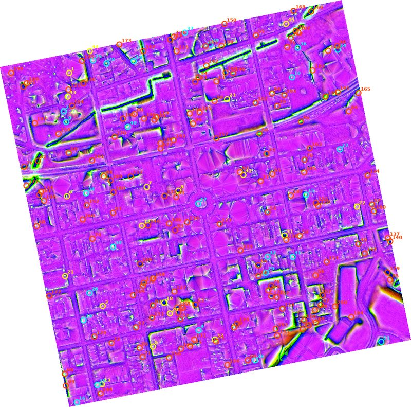

Type in a place. Lidarman reads public LIDAR terrain data and flags the shapes that look man-made — foundations, mounds, berms, sunken roads — the kind trees and grass hide from aerial photos.
Best on a bigger screen. A laptop, desktop, iPad or Android tablet gives you room for the map and every tool at once. A phone works too — the bigger its screen, the more you'll get done — but it really earns its keep out in the field: tap "Track this" on anything you've found and it shows how far away it is and which way to walk.
It keeps growing, too. What began on US data now searches England, Wales, Norway, the Netherlands and Poland as well — each one running on that country's own national survey at the same 1 m detail, not a coarse worldwide one.
Newest in: about 100,000 schoolhouses, post offices, churches and mills across the US that USGS lists as gone, each one on the map where the surveyors put it. Before that, castle sites across England, Scotland and Wales, a spy lens for looking under the terrain at the ground beneath it, and coloured pens for ringing anything worth a second look and pinning a note to it before you screenshot the lot.
The map opens full screen on a page of its own. Pick one of the ten demo places and search it as often as you like — no account, no card.
Lidarman is $25, once. The demo places are free to search as often as you like — no account, no card.
Here's what the alternatives cost, straight from their own pricing pages:
Every one of those is a rental. Stop paying and it all goes away, however many years you've put in. Lidarman is $25, once. The unlock stays on your device and there's nothing to cancel.
It does one job: read the ground and flag the shapes that don't look natural. If that's the part you were after, you shouldn't have to rent it.
Subterrix is the one people ask about, so here is what a paid account actually gets you. Elite is $149 a year. Paydirt, their gold tool, is not in it — that's a second subscription called Motherlode at $159.99 a year, which their own checkout describes as separate from your membership. Together, $308.99 a year, every year.
Then it meters you anyway. A terrain scan costs 2 credits. Seeing the cellar holes it found costs another. A property report costs 5. The free tier is 20 credits a month, so ten scans — and you pay again to see what was in them. Their front page says their terrain analysis is “free to explore.” It isn't. It wants your name, your email, a password, your detector model and a list of what you collect, and then it charges you credits.
The bigger claim is the one on the front page: 77 million data points, five AI models, “ZERO guesswork.” Here is what five cross-validating AI models produced on a real scan of Gettysburg — the most thoroughly detected ground in America.
A cellar hole is about half a metre deep. Fourteen metres is forty-six feet. Those are drainage basins in the middle of a built-up borough, and the software half-knows it — it prints the words “may be a natural drainage basin” directly underneath, and still ranks it first, and still tells you to start there and work inward.
The damning part is on the same screen. That scan's own cellar-hole layer — the part that costs the extra credit — reports a genuine one at 0.5 m deep, 38 m², 4.6 × 12.6 m. So the software knows exactly what a cellar hole measures. The recommendation engine sitting on top of it ignores its own detector and sends you to a storm drain, labelled START HERE.
That is what “zero guesswork” buys, and it is worse than a blank map. A blank map costs you nothing. A confident wrong answer costs you a Saturday, a tank of fuel, and the drive home.
Lidarman won't do that, and not by accident — it is the thing the classifier was built to refuse. Anything deeper than three metres is named “too deep for a structure — landform”. A hollow whose floor ramps instead of sitting flat is named “bowl-shaped — reads natural”. Every reading is gated on measurements that support it, and anything failing the gates is called unclassified rather than given a flattering guess. On a real forest scan, 627 of 693 candidates came back unclassified — because that is what they were. You get the depth, the footprint, the floor profile and the coordinates, and you decide. Once, for $25.
Prices and quotations taken from each company's own pages; the Subterrix figures, credit costs and scan output were read off a logged-in account on 24 September 2026. Any of it can change — go and look rather than taking our word for it.
Airborne LIDAR has become a standard remote-sensing tool in archaeology because of one property optical imagery lacks: a single laser pulse can return multiple times as it passes through vegetation canopy before hitting bare ground, letting a classified point cloud be filtered down to a "bare-earth" elevation model with the trees and undergrowth digitally stripped away. This is the same property behind well-known LIDAR-driven discoveries of settlement networks hidden under dense forest canopy in Mesoamerica and Southeast Asia — the structures were never truly hidden underground, only hidden from optical sensors by what was growing on top of them.
Raw elevation alone, however, rarely shows anything useful: a building foundation reduced to a few centimeters of relief is invisible against natural micro-topography and sensor noise at normal color scales. The techniques below — long established in archaeological remote-sensing literature — exaggerate exactly that kind of small local relief, turning elevation data most people would dismiss as "just a flat field" into a map of what used to stand there.
Input can be a user-supplied DEM GeoTIFF, a ground-classified LAS/LAZ point cloud (gridded via linear interpolation over the classified ground returns), or a place name or coordinate pair, geocoded via OpenStreetMap/Nominatim and fetched directly from whichever national survey covers it — USGS's 3D Elevation Program (3DEP) in the US, the Environment Agency's LIDAR Composite in England, Kartverket's national height model in Norway, AHN in the Netherlands and GUGiK's NMT in Poland, each at 1 m — with no manual download step and no API key required.
Four derived products are computed from the DEM:
These four are fused into an RGB composite (openness channels plus hillshade) in which man-made geometry tends to separate visually from the more textured, irregular signature of natural terrain.
The LRM is thresholded against local background noise (mean ± k standard deviations) into "raised" and "depressed" binary masks, which are then processed with OpenCV contour extraction. Each contour is scored for rectangularity (contour area over minimum-bounding-rectangle area) and circularity (4π·area / perimeter²) — shapes clearing either threshold are classified accordingly; the rest are kept as lower-confidence "irregular" candidates. Shape score alone is a poor sort key, because a blob a few pixels across fills its own bounding rectangle exactly and so scores a perfect 1.0 by construction. Ranking therefore weights the shape score by a log-normal size plausibility, peaking around a building-sized footprint and falling away toward both specks and hillside-sized landforms.
Shape and size still only describe an outline. Whether the ground inside it was worked is answered by the floor profile: a dug cellar or a levelled pad sits at roughly one depth, so most of its interior is near the extreme, while a natural hollow ramps continuously and only a small core gets there. Each candidate therefore also reports depth and a "floor flat" fraction — the share of its interior within 75% of its own peak relief. The measure is scale-free and the geometry supplies its own reference points: a flat-floored pad approaches 1.0, an ideal paraboloid basin scores 0.25, a cone 0.06. It is computed on the elevation model against a quadratic trend surface fitted to a ring just outside the feature, which removes both regional slope and curvature; measured on the Local Relief Model instead it is meaningless, for the reason in the note below. Where relief falls below about three times the local noise floor, no value is reported rather than a misleading one. Floor flatness is the third term in the ranking, and across 693 candidates from a real forested scan its median was 0.25 — precisely the paraboloid figure, i.e. most terrain reads as terrain.
Those measurements are then read into a plain-language interpretation — "possible cellar hole or dug foundation", "linear cut — possible mill race, ditch or sunken lane", "bowl-shaped — reads natural" — with every label gated on the evidence supporting it. Long thin earthworks are classified before house-shaped rules get to them, since a race bank and a building footprint are distinguished by aspect ratio and by whether the top is flat rather than by outline alone. Anything failing the gates is named as unclassified rather than given a flattering guess; on the scan above that was 627 of 693.
Before trusting the pipeline against real data, we generated a synthetic DEM — rolling terrain plus Gaussian noise — with three known structures embedded at known locations: a 40 × 20 m rectangular raised foundation, an 18 m-diameter circular raised mound, and a diagonal sunken linear ditch. The detection pipeline was run blind to these ground-truth positions.


| Rank | Shape | Detected area | True area | Detected size | True size |
|---|---|---|---|---|---|
| 1 | circular | 238 m² | ~254 m² | 17.7 m dia. | 18 m dia. |
| 2 | rectangular | 751 m² | 800 m² | 20.0 × 39.5 m | 20 × 40 m |
Both embedded structures were recovered as the top two ranked candidates, with size and location matching ground truth closely. Remaining candidates in the ranked list are false positives driven by the synthetic terrain's random noise floor — expected, and consistently ranked below the true structures by confidence score.
To test the pipeline against real, auto-fetched LIDAR data, we ran it against an 800 × 800 m area centered on downtown Gettysburg, Pennsylvania, at 1 m resolution, fetched automatically from USGS 3DEP by place name alone.


Once a candidate location is identified, the next question for a hobbyist is: where does that map onto the world as it actually looks today? Lidarman builds a "blink comparator" — the same technique astronomers have long used to spot a moving object by flashing two photos of the same sky back and forth — that flashes between a present-day satellite image and the LIDAR past-structure composite, aligned pixel-for-pixel, in real time. In the web application this is a live map overlay; the CLI additionally emits a standalone, self-contained HTML file for offline viewing.
The comparison also runs the other way, against the documentary record rather than the terrain. The web application can lay any sheet from the USGS Historical Topographic Map Collection — every quadrangle the survey ever printed, back to 1884 — over the same view at adjustable opacity. This matters because a terrain anomaly and a cartographic one are independent kinds of evidence: the detector can only report that the ground holds a rectangular depression of a plausible size with a flat floor, whereas a black square inked on that spot in 1902 reports that a surveyor stood there and saw a building. Either alone is a candidate. Together they are a target, and the distinction is the difference between a day spent walking and a day spent digging.
A Leaflet-based map interface runs over the same pipeline described above:
Lidarman runs on a server, not on your phone. Every search pulls fresh elevation data for your spot and processes it, which takes real time and real compute — that's why it isn't just a file you download once. Try it free — search the demo places as often as you like, then a one-time $25 payment unlocks the tool on that device, no subscription. There's a fair-use limit of 100 searches a day on paid devices — far more than anyone hunting real ground will use, and it's only there to stop a script hammering the server on one payment.
No legal or jurisdictional restrictions are built into the tool itself — where it is or isn't appropriate to search with the results is entirely the responsibility of the person using it, the same as any other detection or survey equipment.
Yes — England, Wales, Norway, the Netherlands and Poland. Search a place in any of them the same way you'd search a US one and you'll get the same 1 m detail, because each runs on that country's own national lidar survey rather than a coarse worldwide one.
Nowhere else yet. Each survey stops at its own border, so Scotland and Northern Ireland aren't covered even though England and Wales are. If you search somewhere with no coverage, Lidarman will say so rather than hand you a blank map.
Scotland is a half-exception. You can put its scheduled monuments and castle sites on the map and go and look at them, but you can't scan there — Scotland's lidar covers about a third of the country and is published as pictures rather than ground heights, so there's nothing to read a hillshade from.
Protected sites are flagged in all six. Each country's own register does it — the National Park Service in the US, Historic England's Scheduled Monuments, Cadw's in Wales, Riksantikvaren in Norway, the rijksmonumenten register in the Netherlands and Poland's registered archaeological monuments. Land a candidate on one and it's marked, with the monument named where the register gives a name.
That's a floor, not a clearance. None of it replaces the landowner's permission, and Poland expects a conservator's permit for detecting anywhere at all, not just on a registered site.
Searching the demo places is free and unlimited, no account required. To search anywhere else, a one-time $25 payment unlocks that device — no subscription, no recurring charge, with a fair-use ceiling of 100 searches a day.
LIDAR measures ground elevation directly by bouncing laser pulses off the surface from an aircraft, dense enough to filter out tree canopy and see the bare earth underneath. A collapsed foundation or filled-in sunken path can be completely invisible in a satellite photo — flat color, no shadow — while still showing up as a few centimeters of elevation change once you process the bare-earth model the right way (§2.2).
No. Lidarman only narrows down where to look — it doesn't detect metal itself. It's built with detectorists in mind, but the output is just as useful to anyone scouting old sites on foot.
No — treat candidates as a starting point, not a verdict. See Limitations (§8) for the specific failure modes (terrain noise, vegetation edges, large flat features) worth knowing before you commit to digging a spot.
Lidarman doesn't build in any restriction on where you search — that responsibility is entirely yours, same as owning a metal detector doesn't make every location legal to use one on. Check land ownership and local/state rules before you dig — see permission and legal basics for the general ground rules, including a note about the battlefield presets in the tool above.
Field guides: Historical maps for metal detecting · Finding old homestead sites with LIDAR · LiDAR hillshade maps for metal detecting · Permission and legal basics · all guides →